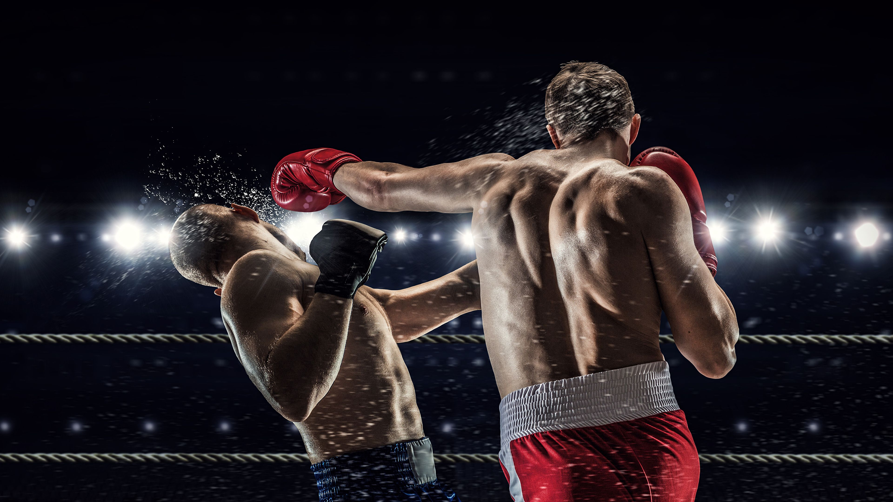
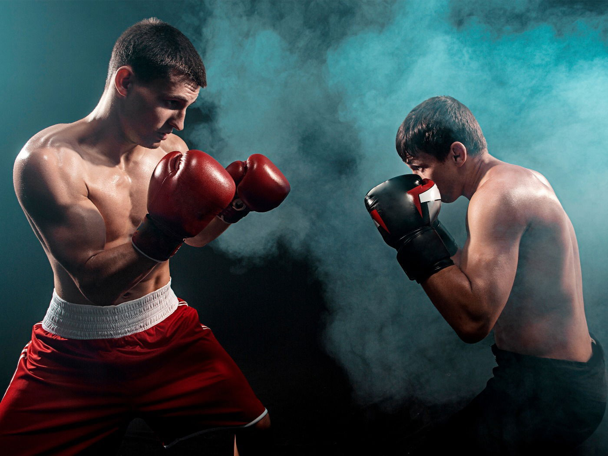
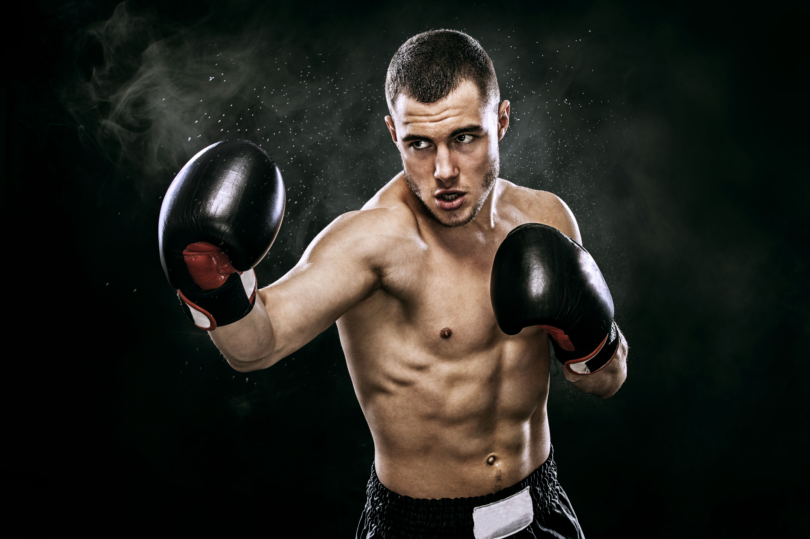

Resumo sobre o Boxe
  O boxe é um esporte de combate em que dois competidores, usando luvas, se enfrentam em um ringue e tentam acertar golpes com os punhos na cabeça e no tronco um do outro, enquanto se defendem. O objetivo é ganhar pontos ou nocautear o adversário.
Estrutura das Lutas
- Rounds: As lutas de boxe são divididas em rounds (geralmente 3 minutos cada), com intervalos de descanso de 1 minuto entre eles. O número de rounds varia, sendo 12 rounds o padrão para lutas profissionais de título mundial.
- Categoria de Peso: Os boxeadores competem em diferentes categorias de peso para garantir lutas mais justas, como peso leve, peso médio, e peso pesado.
- Pontos e Nocaute: Os boxeadores ganham pontos por golpes bem-sucedidos. A luta pode terminar em vitória por pontos, por nocaute (quando um dos lutadores é incapaz de continuar) ou por decisão dos juízes.
Conclusão
O boxe continua a ser um dos esportes de combate mais populares e respeitados do mundo, conhecido tanto por sua técnica refinada quanto por seu intenso desafio físico e mental.